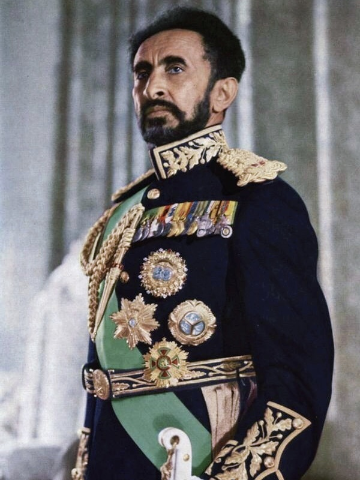

Haile Selassie I, original name Tafari Makonnen, (born July 23, 1892, near Harer, Ethiopia—died August 27, 1975, Addis Ababa),
emperor of Ethiopia from 1930 to 1974 who sought to modernize his country and who steered it into the mainstream of post-World War II African politics.
He brought Ethiopia into the League of Nations and the United Nations and made Addis Ababa the major centre for the Organization of African Unity (now African Union).